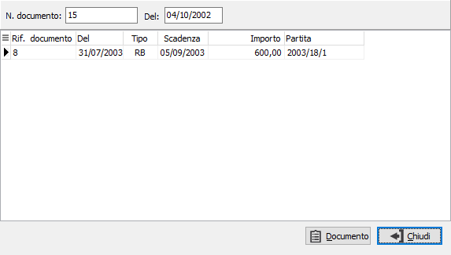
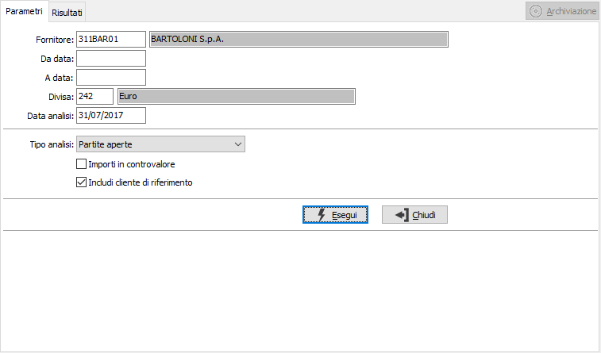
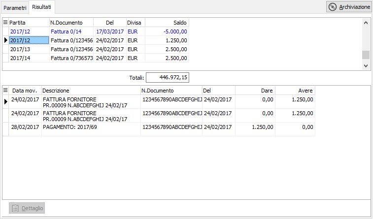

Il pulsante Dettaglio si attiva per i documenti associati ad altri; se premuto mostra il dettaglio dei documenti associati. Se il documento associato deriva dalle vendite è possibile, tramite il pulsante Documento accedervi.Analisi estratto conto fornitori
I programmi di analisi estratti conto accedono alla tabella Movimenti contabili relativamente al fornitore indicato e visualizzano i movimenti relativi alle partite coerenti con i parametri di selezione inseriti.
I programmi si articolano su una prima finestra video Parametri, in cui vengono fornite le informazioni necessarie per effettuare le selezioni, ed una seconda finestra video Risultati, in cui vengono visualizzate le partite ed i movimenti contabili relativi a ciascuna partita.
Cliccando su uno dei righi partita evidenziati, è possibile accedere interattivamente alla manutenzione delle scadenze relative alla patita attiva.
L’analisi partite fornitori è accessibile tramite le scelte Contabilità, Partite aperte fornitori, Analisi estratto conto; effettuata la scelta, appare la seguente maschera video:
Finestra video Parametri

FORNITORE: campo obbligatorio per inserire il codice del fornitore, presente nella rispettiva Anagrafica, di cui si intendono visualizzare i movimenti sulle partite. Sul campo è attiva la funzione di ricerca a video F9.
DA DATA: eventuale data di registrazione contabile da cui deve iniziare l’analisi dei movimenti delle partite, relativamente al fornitore indicato. Confermando a vuoto, l’analisi inizia dal primo movimento contabile valido.
A DATA: eventuale data di registrazione contabile a cui deve terminare l’analisi dei movimenti delle partite, relativamente al fornitore indicato. Confermando a vuoto, l’analisi termina con l’ultimo movimento contabile valido.
DIVISA: codice obbligatorio della divisa di cui devono essere visualizzate le partite. Viene proposta automaticamente la divisa contenuta nell’anagrafica del fornitore indicato, che può essere variata a cura dell’utente nel caso in cui il fornitore indicato abbia partite in varie divise. Non è possibile confermare a vuoto al fine di evitare una eventuale totalizzazione fra divise differenti. Sul campo è attiva la funzione di ricerca a video F9.
TIPO ANALISI: combo box per definire lo stato delle partite da analizzare. Valori ammessi:
Partite aperte
Partite chiuse
IMPORTI IN CONTROVALORE: check box per definire in quale divisa devono essere visualizzate le partite. Valori ammessi:
vuoto = importi in divisa dei documenti
spunta = importi in divisa di conto
INCLUDI CLIENTE DI RIFERIMENTO: se spuntato include le partite del cliente di riferimento, se presente; tali partite saranno evidenziate in blu nella finestra risultati.
Indicati tutti i parametri di selezione ritenuti opportuni, occorre avviare la selezione premendo il bottone Esegui. Viene quindi visualizzata la finestra video Risultati:
Finestra video Risultati

La finestra video è suddivisa in due sezioni. Nella sezione superiore vengono visualizzati, su un rigo, i dati di sintesi delle partite coerenti con i parametri di selezione indicati. Vengono visualizzati anno e numero della partita; tipo, serie e numero del documento; data del documento, divisa, eventuale saldo della partita se ancora aperta. In calce alla sezione, il totale scoperto.
Nella sezione inferiore vengono visualizzati i movimenti contabili relativi alla partita attiva, ovvero a quella evidenziata nella sezione superiore. Scorrendo le partite tramite freccia giù e freccia su nella sezione superiore, il contenuto della sezione inferiore cambia al cambiare della partita.
Cliccando due volte sulla partita evidenziata nella sezione superiore, si accede interattivamente al programma di Manutenzione scadenze per visualizzare i dettagli scadenze della partita attiva.
